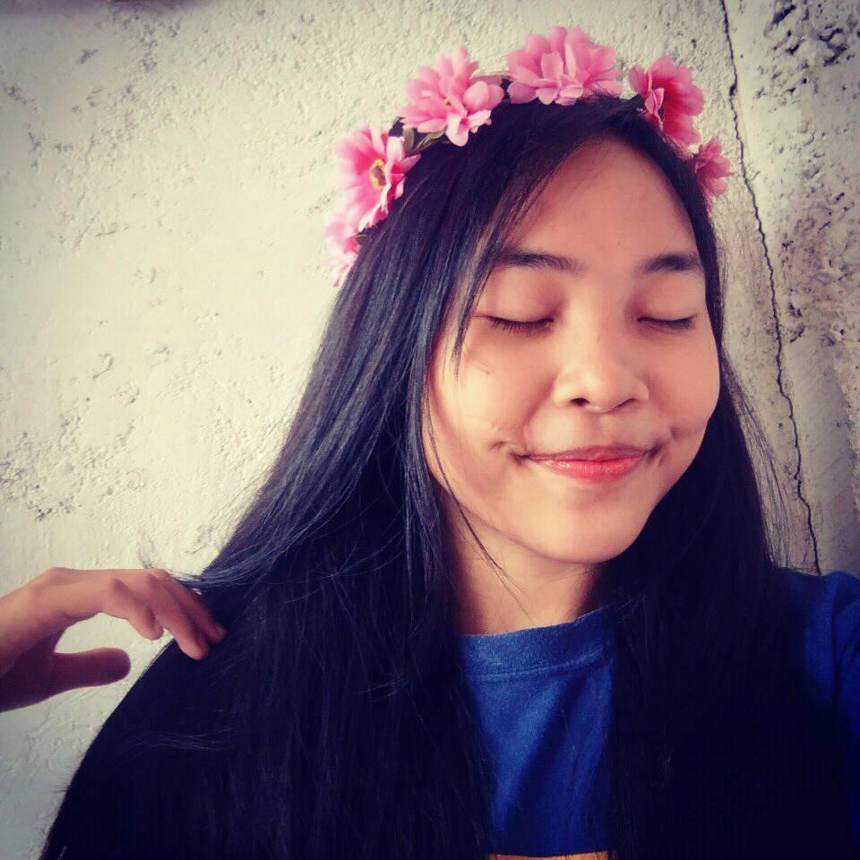

I am Shaira Utto a senior highschool student in ND-RVMCC.
I'm 15 years old and incoming 16 on October 19, 2018. I Can describe my self as a shy person a sensitive
one but I can interact well to the people once I got know them very well. I currently live in Sanpablo,
Cotabato City I am with my sister and we are staying with my uncle,Because my parents live in Maguindanao
we are 8 siblings in the family . I decided to be away from my parents because of my choice to study here
in ND-RVMCC because I find it quiet nice my sister told me a lot of good things about ND-RVMCC so I was encouraged
to try the quality education of ND-RVMCC. But my biggest struggle in school is being shy so one of my experience
is when I need to introduced my self in front of my new classmates I was so nervous but as the time goes by
I suddenly felt comfortable with them I make some new friends ang they are really nice to me and I am so thankfull
that I have a friends like them.
